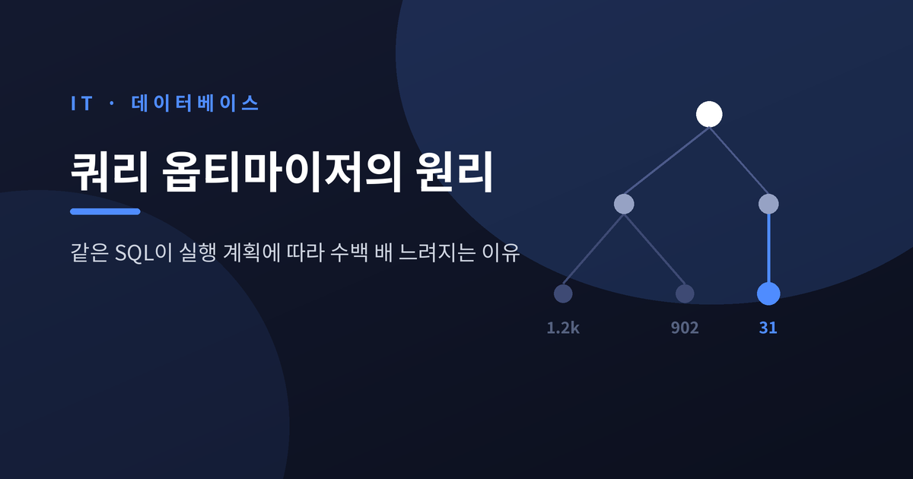
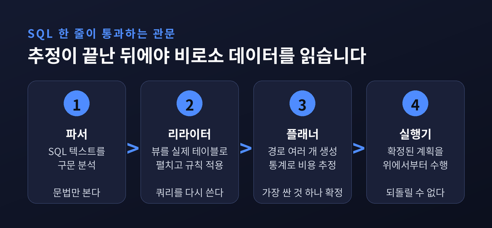
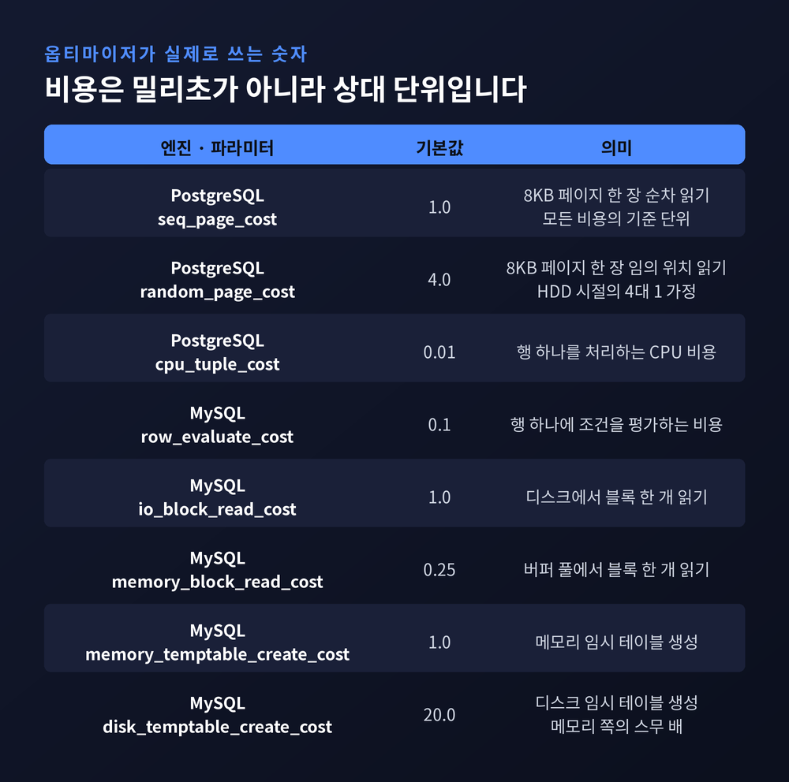
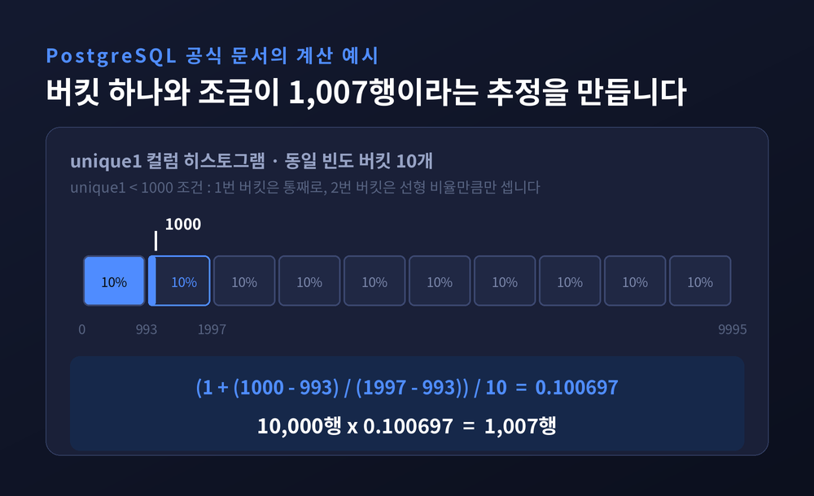
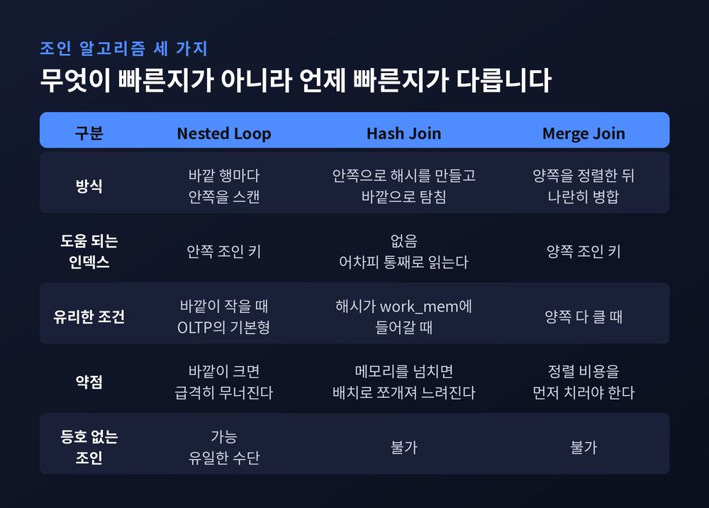
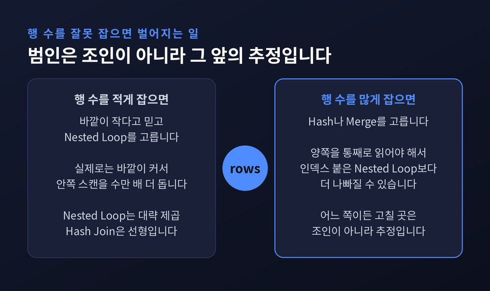
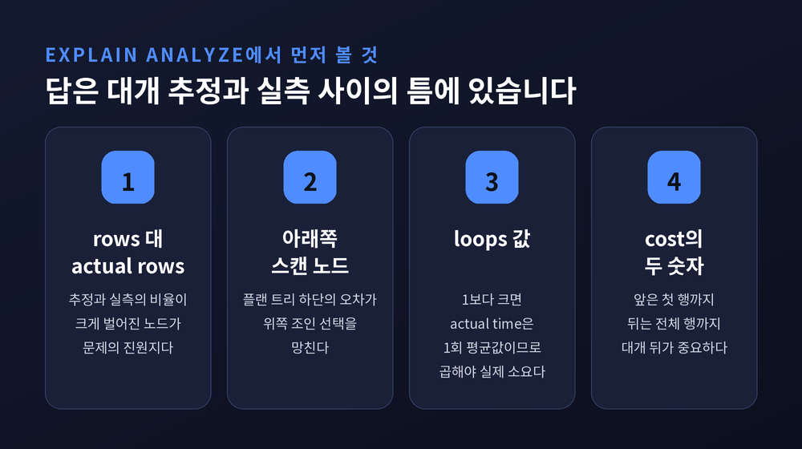

쿼리 옵티마이저 원리 — 같은 SQL이 실행 계획에 따라 수백 배 느려지는 이유

이번 글에서는 데이터베이스 쿼리 옵티마이저를 정리해 보겠습니다. 글자 하나 바꾸지 않은 SQL이 어제는 20밀리초, 오늘은 40초가 되는 일이 실제로 일어납니다. 그 사이에서 무슨 판단이 오갔는지, 파서부터 실행 계획 선택까지 차례로 따라가 보겠습니다.
세 줄 요약
- 옵티마이저는 실행해 보고 고르지 않습니다. 통계와 고정된 비용 상수로 계산한 추정치만 비교해 계획 하나를 확정합니다.
- 나쁜 실행 계획의 지배적 원인은 비용 모델이 아니라 카디널리티(행 수) 오추정입니다. 학계 실측에서도 같은 결론이 나왔습니다.
- 그래서 튜닝의 출발점은 힌트가 아니라 EXPLAIN ANALYZE의
rows와actual rows비교입니다.
SQL 한 줄이 통과하는 네 개의 관문
PostgreSQL을 기준으로 보면 단계는 넷으로 나뉩니다.
첫째, 파서가 SQL 텍스트를 구문 분석해 파스 트리로 만듭니다. 여기서는 문법만 봅니다.
둘째, 리라이터가 파스 트리를 쿼리 트리로 옮기며 쿼리 자체를 다시 씁니다. 뷰를 실제 테이블 참조로 펼치고, 규칙을 적용합니다.
셋째, 플래너가 가능한 실행 경로를 여러 개 만들고 각각의 비용을 추정합니다. 그중 가장 싼 것 하나를 골라 실행 계획 트리로 확정합니다.
넷째, 실행기가 확정된 계획을 위에서부터 따라가며 실제로 데이터를 읽습니다.
문제는 셋째 단계에 있습니다. "가장 싸다"는 판단이 전부 추정에 기대고 있습니다. 옵티마이저는 후보를 실행해 보고 비교하지 않습니다. 통계 정보와 상수로 계산한 숫자만 비교합니다. 추정이 틀리면 계획도 같이 틀립니다.

비용은 초가 아닙니다
EXPLAIN에 찍히는 cost=0.00..458.00이라는 숫자를 밀리초로 읽으시는 분이 많습니다. 아닙니다. 이것은 추상적인 상대 단위입니다.
PostgreSQL의 공식 기본값은 이렇습니다.
| 파라미터 | 기본값 | 의미 |
|---|---|---|
seq_page_cost | 1.0 | 8KB 페이지 한 장을 순차로 읽는 비용 (기준 단위) |
random_page_cost | 4.0 | 8KB 페이지 한 장을 임의 위치에서 읽는 비용 |
cpu_tuple_cost | 0.01 | 행 하나를 처리하는 CPU 비용 |
cpu_index_tuple_cost | 0.005 | 인덱스 엔트리 하나를 처리하는 비용 |
cpu_operator_cost | 0.0025 | 연산자 한 번 호출 비용 |
시퀀셜 스캔의 비용은 (읽을 페이지 수 × 1.0) + (스캔할 행 수 × 0.01)로 계산됩니다. 모든 것이 페이지 한 장을 순차로 읽는 비용을 1로 놓고 매겨진 상대값입니다.
여기서 눈여겨볼 값은 random_page_cost의 4.0입니다. "랜덤 I/O는 순차 I/O보다 네 배 비싸다"는 가정이 옵티마이저 판단의 밑바닥에 깔려 있다는 뜻입니다. 그리고 이 4:1이라는 비율은 회전하는 원판 위에서 헤드가 움직이던 시절의 숫자입니다.
예전엔 이 값이 현실을 잘 반영했습니다. 지금은 사정이 다릅니다. SSD와 NVMe에서는 랜덤 접근 페널티가 훨씬 작아서, 기본값을 그대로 두면 인덱스가 유리한 상황에서도 옵티마이저가 풀 스캔 쪽으로 기울 수 있습니다. 실무에서 이 값을 1.1~2.0 근처로 낮추는 튜닝이 흔한 이유입니다.
MySQL은 접근 방식이 조금 다릅니다. 같은 성격의 상수를 mysql.server_cost와 mysql.engine_cost라는 실제 테이블에 담아 두고 UPDATE 문으로 고치게 합니다. 기본값은 행 평가가 0.1, 키 비교가 0.05, 디스크 블록 읽기가 1.0, 버퍼 풀 블록 읽기가 0.25입니다. 메모리 임시 테이블 생성이 1.0인데 디스크 임시 테이블 생성은 20.0으로 잡혀 있습니다. 정렬이나 그룹핑이 메모리를 넘치는 순간 비용이 스무 배로 뛴다는 계산입니다.

히스토그램이 행 수를 맞추는 방식
옵티마이저가 "이 조건이면 몇 행쯤 나오겠다"고 말할 때, 그 근거는 ANALYZE가 모아 둔 통계입니다. PostgreSQL이 저장하는 핵심 항목은 셋입니다.
- 최빈값 목록(
most_common_vals)과 그 빈도 — 등치 조건 추정에 씁니다. - 히스토그램 경계(
histogram_bounds) — 최빈값을 뺀 나머지를 동일 빈도 버킷으로 쪼갠 경계값입니다. 범위 조건 추정에 씁니다. - 고유값 개수와 NULL 비율
default_statistics_target의 기본값은 100입니다. 이 숫자가 두 가지 일을 동시에 합니다. 배열의 최대 길이를 정하고, 동시에 ANALYZE가 읽어들일 표본 크기를 정합니다. 표본 행 수는 300 × target이므로 기본값에서는 3만 행을 샘플링합니다.
공식 문서의 계산 예시가 명쾌합니다. 1만 행짜리 tenk1 테이블에서 unique1 < 1000 조건을 봅시다. unique1의 히스토그램 경계는 열 개 버킷으로 나뉘어 있고, 두 번째 버킷의 범위는 993부터 1997까지입니다. 값 1000은 이 버킷 안에 들어갑니다.
selectivity = (1 + (1000 − 993) / (1997 − 993)) / 10 = 0.100697
rows = 10000 × 0.100697 = 1007
첫 버킷 하나를 통째로 세고, 두 번째 버킷은 선형 비율만큼만 셉니다. 여기서 "버킷 안에서 값이 균등하게 흩어져 있다"는 가정이 조용히 들어갑니다.
등치 조건은 다릅니다. 찾는 값이 최빈값 목록에 있으면 그 빈도를 그대로 씁니다. 빈도가 0.003이면 추정은 30행이고, 이 경우는 거의 정확합니다. 문제는 목록에 없는 값입니다. 그때는 최빈값 빈도의 합을 1에서 빼고, 남은 고유값 개수로 나눕니다. 즉 최빈값이 아닌 값들은 전부 고르게 분포한다고 가정합니다.
MySQL도 8.0에서 컬럼 히스토그램을 들여왔습니다. ANALYZE TABLE t UPDATE HISTOGRAM ON col WITH n BUCKETS 구문을 씁니다. 버킷은 기본 100개, 최대 1,024개입니다. 고유값이 버킷 수보다 적으면 값 하나당 버킷 하나를 쓰는 싱글톤이 되고, 넘으면 범위를 담는 등고 히스토그램이 됩니다. 인덱스가 붙지 않은 컬럼의 추정을 개선하는 것이 주된 목적입니다.

독립성 가정이 무너지는 자리
조건이 둘 이상이면 옵티마이저는 각 조건의 선택도를 그냥 곱합니다.
WHERE unique1 < 1000 AND stringu1 = 'xxx'라면 0.100697 × 0.0014559 = 0.0001466, 1만 행을 곱해 1행으로 추정합니다. 두 조건이 서로 무관하다는 전제입니다.
현실은 자주 그렇지 않습니다. WHERE 도시 = '서울' AND 지역번호 = '02' 같은 조건을 생각해 보시면 됩니다. 두 컬럼은 사실상 같은 정보를 담고 있습니다. 그런데 옵티마이저는 독립이라 믿고 선택도를 곱해 버립니다. 실제 행 수는 추정치의 수십, 수백 배가 됩니다.
PostgreSQL이 CREATE STATISTICS로 다변량 확장 통계를 제공하는 이유가 여기 있습니다. 다만 이것은 관리자가 대상 컬럼 조합을 직접 지정해야 하는 수동 장치입니다. 자동으로 상관관계를 찾아 주지는 않습니다.
조인 순서 — 12라는 선
테이블 n개를 조인할 때 가능한 순서의 수는 조합적으로 폭발합니다. 그래서 옵티마이저는 두 가지 전략을 나눠 씁니다.
기본은 동적계획법입니다. IBM System R 옵티마이저에서 확립된 고전적 방식으로, 테이블 쌍부터 시작해 유의미한 모든 조합의 최적 플랜을 아래에서 위로 쌓아 올립니다. 비싼 부분 경로는 가지치기합니다. 자기 비용 모델 기준으로는 증명 가능하게 가장 싼 조인 순서에 도달합니다.
문제는 조인 개수가 늘 때입니다. 시간과 메모리가 함께 폭증합니다.
PostgreSQL은 geqo_threshold라는 파라미터로 선을 긋습니다. 기본값은 12입니다. FROM 절 항목이 12개 미만이면 동적계획법, 12개 이상이면 GEQO로 넘어갑니다.
GEQO는 조인 순서 문제를 외판원 문제로 치환해 유전 알고리즘으로 풉니다. 전수 탐색이 아니므로 최적을 보장하지 않습니다. 공식 문서의 표현을 빌리면, 테이블이 많아지면 전수 탐색에 드는 시간이 차선 플랜을 실행하는 손해보다 커지기 때문에 선을 긋는 것입니다.
대가도 분명합니다. GEQO는 확률적이어서 같은 쿼리를 다시 계획해도 다른 플랜이 나올 수 있습니다. 대형 조인에서 성능이 날마다 들쭉날쭉한 원인이 여기 있는 경우가 있습니다.
조인 알고리즘 셋, 각자의 손익분기점
실행 계획의 성패는 결국 조인을 어떻게 돌릴지에서 갈립니다. 선택지는 셋입니다.
Nested Loop는 바깥 릴레이션을 훑으며 각 행마다 안쪽을 스캔합니다. 안쪽 조인 키에 인덱스가 있으면 빨라집니다. 바깥이 작을 때 압도적으로 유리하고, 정규화된 OLTP에서 가장 흔한 방식입니다. 그리고 조인 조건에 등호가 없을 때 쓸 수 있는 유일한 수단이기도 합니다.
Hash Join은 안쪽으로 해시 테이블을 만든 뒤 바깥을 훑으며 탐침합니다. 인덱스는 도움이 되지 않습니다. 양쪽을 통째로 읽기 때문입니다. 작은 쪽 해시가 work_mem 안에 들어가면 강력하고, 넘치면 여러 배치로 쪼개 임시 파일에 쓰면서 성능이 꺾입니다.
Merge Join은 양쪽을 조인 키로 정렬한 뒤 나란히 훑습니다. 양쪽 다 메모리에 담기 어려울 만큼 큰 테이블끼리의 조인에 가장 적합합니다.
| 구분 | Nested Loop | Hash Join | Merge Join |
|---|---|---|---|
| 방식 | 바깥 행마다 안쪽 스캔 | 안쪽 해시 빌드 후 바깥 탐침 | 양쪽 정렬 후 병합 |
| 도움 되는 인덱스 | 안쪽 조인 키 | 없음 | 양쪽 조인 키 |
| 유리한 조건 | 바깥이 작을 때 | 해시가 work_mem에 들어갈 때 | 양쪽 다 클 때 |
| 등호 없는 조인 | 가능 | 불가 | 불가 |

오추정이 만드는 최악의 플랜
이제 앞의 조각들이 하나로 맞물립니다.
행 수를 적게 잡으면, 옵티마이저는 Nested Loop를 고릅니다. 바깥이 작다고 믿었으니 당연한 선택입니다. 그런데 실제로 바깥이 크면, 안쪽 스캔을 예상보다 수만 배 더 돌게 됩니다.
행 수를 많게 잡으면, 반대로 Hash나 Merge를 고릅니다. 양쪽을 통째로 읽어야 하므로, 안쪽에 인덱스가 붙은 Nested Loop보다 훨씬 나빠질 수 있습니다.
두 경우 모두 범인은 조인이 아닙니다. 그보다 앞 단계에서 일어난 행 수 오추정입니다. 시간의 대부분을 조인에서 쓰더라도, 고쳐야 할 곳은 추정입니다.
이것이 감에 의존한 말이 아니라는 점이 중요합니다. 2015년 VLDB에 실린 Leis 등의 논문 「How Good Are Query Optimizers, Really?」는 IMDb 실데이터로 만든 Join Order Benchmark로 이 문제를 실측했습니다. 결론은 셋이었습니다. 상용 등급 카디널리티 추정기들이 일상적으로 큰 오차를 낸다는 것, 비용 모델이 성능에 미치는 영향은 카디널리티 추정보다 훨씬 작다는 것, 그리고 추정이 부정확해도 전수 열거는 여전히 성능을 개선한다는 것입니다.
후속 연구들이 보고한 오차의 규모는 이렇습니다. 조인 결과 카디널리티에서 최대 10^8배 과소추정, 최대 10^4배 과대추정이 문서화됐습니다. 한 측정에서는 과소추정 비율이 조인 수에 따라 가파르게 올라 2-조인 쿼리에서 80%, 4-조인 쿼리에서 98%를 넘었습니다. 같은 벤치마크의 864개 조인 연산 가운데 104건에서 Nested Loop가 선택됐고, 원인은 조인 카디널리티 과소추정이었습니다. IMDb 워크로드의 한 쿼리는 그 탓에 3,400초짜리 플랜으로 실행된 사례가 남아 있습니다.
Nested Loop는 대략 O(n²)이고 Hash Join은 O(n)입니다. 과소추정이 저렇게 흔하다면, Nested Loop를 고르는 결정은 꽤 위험한 베팅인 셈입니다.
다만 위 수치들은 특정 벤치마크와 데이터셋에서 나온 측정값입니다. 모든 워크로드에 그대로 적용되는 상수가 아니라는 점은 분명히 해 두어야 하겠습니다.

EXPLAIN ANALYZE에서 실제로 봐야 할 것
EXPLAIN은 실행하지 않고 옵티마이저의 추정만 보여 줍니다. EXPLAIN ANALYZE는 실제로 실행한 뒤 추정과 실측을 나란히 놓습니다. 진단은 후자로 합니다.
읽어야 할 숫자는 이렇습니다.
cost=A..B— A는 첫 행이 나오기까지의 시작 비용, B는 전체 행을 반환하는 총 비용입니다. 대개 중요한 것은 B입니다.rows=N— 옵티마이저가 추정한 행 수actual rows=N— 실제로 반환된 행 수actual time=A..B— 첫 행까지, 전체 행까지 걸린 시간(ms)loops=N— 이 노드가 몇 번 실행됐는가Planning Time/Execution Time— 계획 수립과 실행에 각각 걸린 시간
여기서 함정이 하나 있습니다. loops가 1보다 크면 actual time은 1회 평균값입니다. 실제 소요를 알려면 actual time × loops로 곱해야 합니다. 이걸 놓치면 진짜 병목 노드를 눈앞에 두고도 지나칩니다.
진단 순서는 단순합니다. 먼저 rows와 actual rows의 비율이 크게 벌어진 노드를 찾습니다. 특히 플랜 트리 아래쪽의 스캔·필터 노드에서 벌어진 오차가 위쪽 조인 선택을 망칩니다. 그다음 loops가 비정상적으로 큰 Nested Loop를 의심합니다. 옵티마이저가 바깥 행이 적을 거라 믿었는데 실제로는 많았다는 신호입니다.

힌트와 플랜 고정 — 구현마다 철학이 다릅니다
Oracle은 장치를 많이 갖춰 두었습니다. 옵티마이저 힌트를 주석에 넣어 플랜을 유도할 수 있고, 19c의 힌트 리포트는 어떤 힌트가 쓰였고 어떤 힌트가 무시됐는지, 대개는 무시된 이유까지 보여 줍니다. 힌트는 조건이 맞지 않으면 그냥 무시된다는 점을 기억해 둘 만합니다.
더 강한 장치가 SQL Plan Baselines입니다. 특정 SQL에 대해 검증된 플랜 집합을 저장해 두고, 옵티마이저의 예측 불가능한 결정으로부터 쿼리를 보호합니다. 승인된 베이스라인 플랜은 절대 adaptive하게 바뀌지 않습니다. 대신 트레이드오프가 명확합니다. Oracle 백서의 표현대로, 플랜 베이스라인은 실행 성능 극대화보다 플랜 안정성을 우선합니다. 12c에서 도입되어 19c에서 강화된 Adaptive Query Optimization은 그 반대편에서, 실행 중에 추정이 틀렸음을 감지하고 방향을 바꾸는 접근입니다.
PostgreSQL은 코어에 힌트를 두지 않았습니다. 의도적인 선택입니다. 대신 enable_nestloop, enable_hashjoin, enable_mergejoin 같은 세션 스위치로 특정 전략을 억제할 수 있습니다. 완전히 끄는 것은 아닙니다. 특히 Nested Loop는 등호 없는 조인에서 유일한 수단이라 끌 수 없습니다. 힌트가 꼭 필요하면 pg_hint_plan 확장을 씁니다. /*+ SeqScan(orders) */ 같은 주석으로 스캔 방식과 조인 순서를 지정합니다.
순서를 지키는 편이 낫습니다. 힌트는 마지막 카드입니다. 그보다 먼저 ANALYZE를 돌리고, 필요하면 default_statistics_target을 올려 보고, work_mem을 조정해 해시 조인이 싸게 나오는지 확인합니다. 그리고 random_page_cost와 effective_cache_size로 내 하드웨어가 어떤 물건인지 옵티마이저에게 알려 주는 일이 의외로 크게 듣습니다.
정리하면 이렇습니다.
옵티마이저는 대단히 정교한 계산기입니다. 다만 그 계산의 입력이 3만 행 표본에서 뽑은 히스토그램과, 조건들이 서로 독립이라는 가정과, 랜덤 I/O가 순차 I/O보다 네 배 비싸다는 오래된 상수입니다. 입력이 흔들리면 아무리 좋은 계산기도 엉뚱한 답을 냅니다.
그래서 SQL을 다시 쓰기 전에 EXPLAIN ANALYZE를 먼저 여는 습관을 권합니다. 대개 답은 rows와 actual rows 사이의 벌어진 틈에 있습니다.
"옵티마이저는 거짓말을 하지 않습니다. 잘못된 숫자를 성실하게 믿을 뿐입니다."
같은 SQL이 어떻게 수백 배 느려질 수 있냐고 물으신다면, 이제 그 숫자가 어디서 어긋났는지 짚어 보실 수 있을 것입니다.